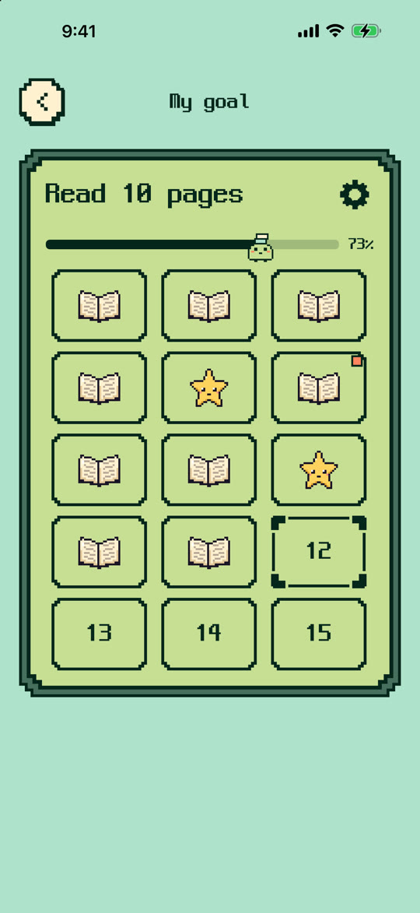
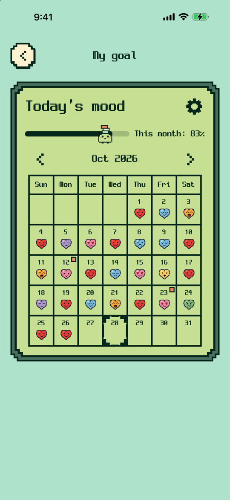
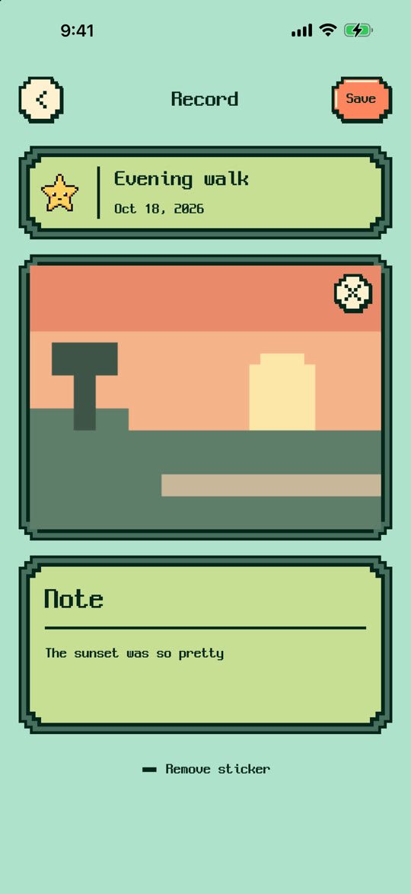
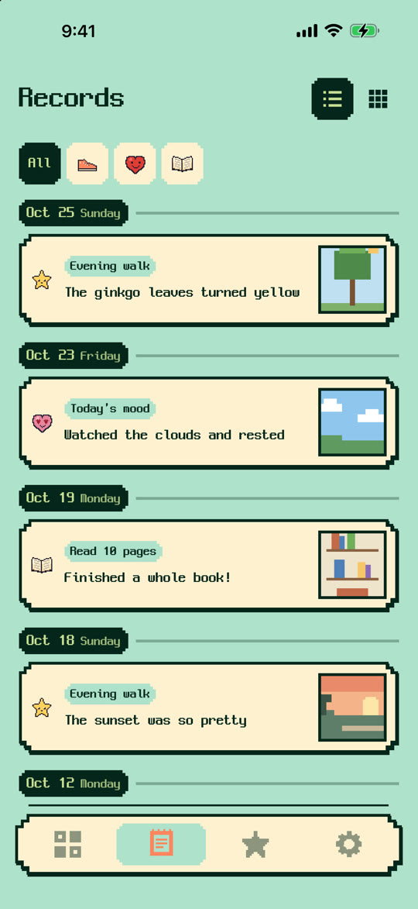
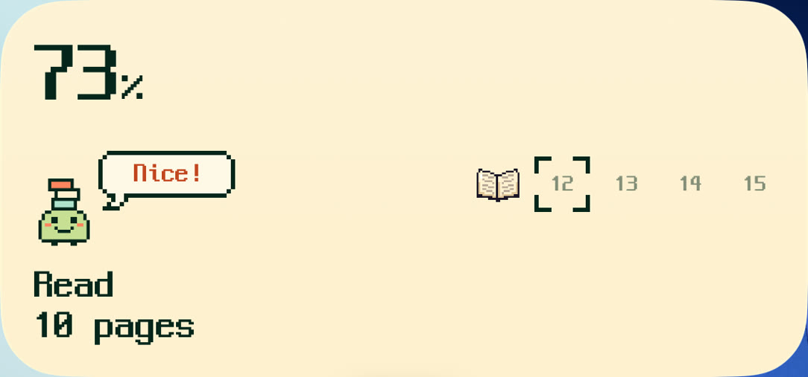
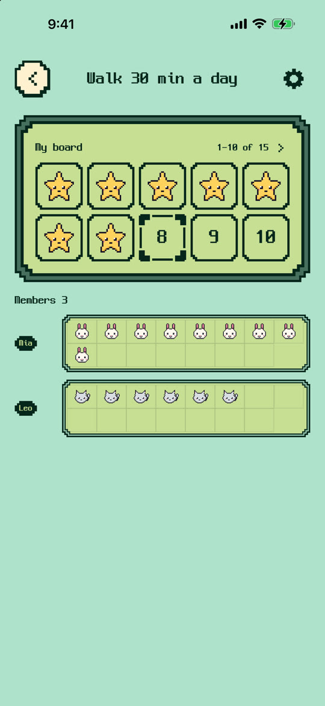
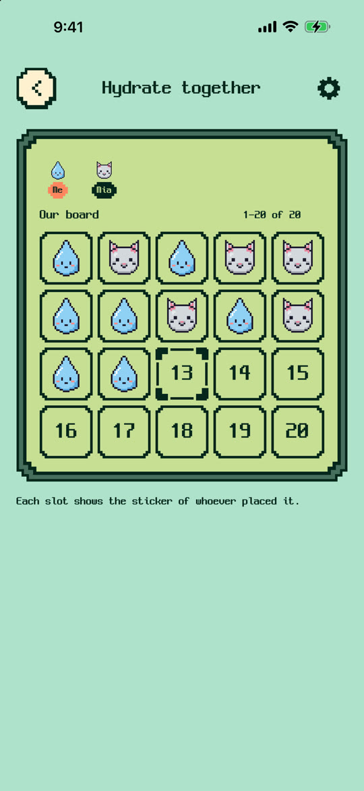
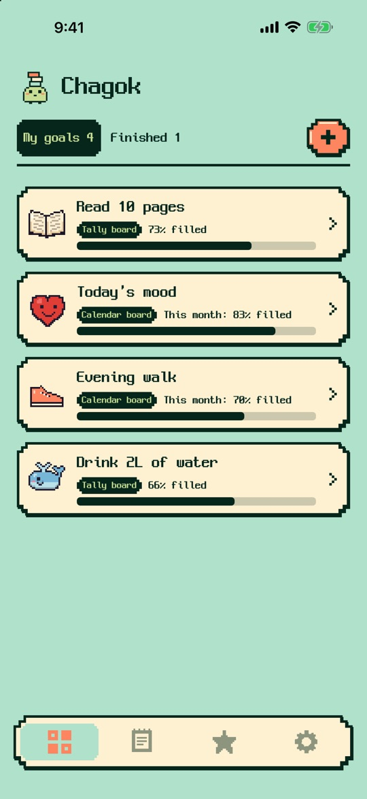

選ぶ
選ぶ目標ごとに、好きなドット絵シールを選べます。どれを貼ろうか迷う時間も、楽しみのひとつです。
寝る前の読書10ページ、夕方の散歩、コップ1杯の水。できた日に空きマスをタップしてシールを貼れば、台紙が少しずつ埋まっていきます。
iPhoneとApple Watchに対応ごほうびシールを集めるように、台紙が少しずつ埋まっていきます。


 78910
78910




貼ったシールをタップすると、その日の写真と短いメモを残せます。シールだけでも立派な記録です。アプリで撮った写真は、写真ライブラリにたまりません。


記録は「記録」タブに日付順で集まります。目標ごとに絞り込んだり、タイムラインと写真の一覧を切り替えたりできます。完成した台紙の記録も見られます。
運動を終えたその場で、Apple Watchからシールを貼れます。貼るたびにチャゴクの頭にブロックがひとつ落ちてきて、3つ積み上がると箱にしまってくれます。

ホーム画面のウィジェットなら、アプリを開かずに空きマスをタップしてシールを貼れます。ウィジェットは「1つの目標」「回数の台紙」「今月」の3種類で、背景色も選べます。
招待リンクを送ると、友達が同じ目標に参加できます。自分を含めて6人まで一緒に使えます。


順位や達成率をくらべる機能はありません。写真とメモは自分だけのものです。友達と一緒に使うにはログインが必要です。
どんなことでも台紙にできます。目標が小さいほど貼る回数が増えて、もっと楽しくなります。

ダウンロード無料
一部のシールパックとサブスクリプションは、アプリ内課金です。
ご不明な点はサポートページからお問い合わせください。
寝る前の読書10ページ、夕方の散歩、コップ1杯の水。できた日に空きマスをタップしてシールを貼れば、台紙が少しずつ埋まっていきます。
ごほうびシールを集めるように、台紙が少しずつ埋まっていきます。
選ぶ目標ごとに、好きなドット絵シールを選べます。どれを貼ろうか迷う時間も、楽しみのひとつです。
78910空きマスを1回タップするだけ。台紙が1マスずつ埋まっていくのが目に見えます。
最後のマスまで埋まった台紙は、見返すたびにうれしくなります。埋めていくほど、チャゴクの表情も変わります。

名前をつけて、シールを選びます。マスの数を決める「回数の台紙」と、できた日付に貼る「カレンダーの台紙」から選べます。カレンダーの台紙には終了日も設定できます。
空きマスを1回タップするだけ。まちがえて貼っても、長押しすればはがせます。貼り忘れた日も、あとから貼れます。
ペタッ！運動を終えたその場で、Apple Watchからシールを貼れます。貼るたびにチャゴクの頭にブロックがひとつ落ちてきて、3つ積み上がると箱にしまってくれます。
ホーム画面のウィジェットなら、アプリを開かずに空きマスをタップしてシールを貼れます。ウィジェットは「1つの目標」「回数の台紙」「今月」の3種類で、背景色も選べます。
貼ったシールをタップすると、その日の写真と短いメモを残せます。シールだけでも立派な記録です。アプリで撮った写真は、写真ライブラリにたまりません。
記録は「記録」タブに日付順で集まります。目標ごとに絞り込んだり、タイムラインと写真の一覧を切り替えたりできます。完成した台紙の記録も見られます。
1か月後に、埋まった台紙とその日の写真を見返してみてください。できた日が、ぜんぶそこに残っています。完成した台紙も、「続ける」で続きを貼れます。
ここまで26日招待リンクを送ると、友達が同じ目標に参加できます。自分を含めて6人まで一緒に使えます。
昔の携帯ゲーム機の画面のように、1ドットずつ描いたシールです。
どんなことでも台紙にできます。目標が小さいほど貼る回数が増えて、もっと楽しくなります。
インストールしたら、すぐに始められます。積み重ねた記録が消えないよう、バックアップも用意しています。